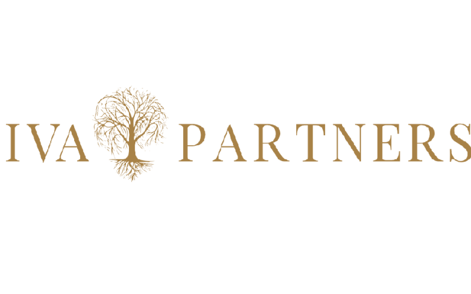

Новости
-
Минфин предложил единый налоговый вычет
Минфин разработал новый формат индивидуальных инвестиционных счетов (ИИС-III) — его включат в систему единого налогового вычета наряду с пенсионными и страховыми инвестициями. С 2024 года ИИС-III полностью заменит ИИС-I, запущенный в 2015 году. Новый инвестсчет будет неинтересен для инвесторов в предложенной конфигурации, считают в НАУФОР
Подробнее -

Рэй Далио перестал считать наличные «мусором»
В 2021 году Далио, напротив, в период роста инфляции говорил, что «наличные — это мусор», и не стоит хранить в них свои средства. Спустя год он в своем Twitter (нынешний X) сообщил, что изменил свое мнение.
Подробнее -
Инвестиции в 5G – необходимое условие экономического развития
Генеральный директор Kcell Асхат Узбеков рассказал о том, что развертывание сети пятого поколения и развитие экосистемы индустрии 5G в Казахстане неизбежно и ощутимо повлияют на экономику. Это произойдет за счет реализации цифровой трансформации, где платформы 5G станут ключевыми факторами трансформации экономики.
Подробнее -

У инвесткомпании «ИВА Партнерс» сменился собственник
Минфин разработал новый формат индивидуальных инвестиционных счетов (ИИС-III) — его включат в систему единого налогового вычета наряду с пенсионными и страховыми инвестициями. С 2024 года ИИС-III полностью заменит ИИС-I, запущенный в 2015 году. Новый инвестсчет будет неинтересен для инвесторов в предложенной конфигурации, считают в НАУФОР
Подробнее -

Зеленые, исламские
На рынке инвестирования новым трендом можно назвать появление так называемых зеленых фондов. Обсуждая тему в рамках Международной недели инвесторов, эксперты отметили, что "зеленая" экономика и "зеленые" инвестиции набирают обороты. Уже есть инвесторы, которые вкладывают только в соответствующие этим требованиям акции. И этот тренд в ближайшую пятилетку может оказать значительное влияние на развитие как отдельных компаний, так и государственных экономик.
Подробнее